2026-10-26 · 本地源码已完成六项修改。未导出或更新 iPhone。
846 项定向检查通过 · 后台离屏渲染取自 完整台词汇总 · 序章前：故事背景旁白，四段原文逐字保留。上方插画四边渐黑，等比完整显示；点击确认，每次读下一行，优先按完整句子与分句断行。文字逐字出现并播放短促的打字机声。切图采用 0.65 秒淡入；最后一行确认后进入海峡城庆典。未读完的介绍可从旅程记录继续。
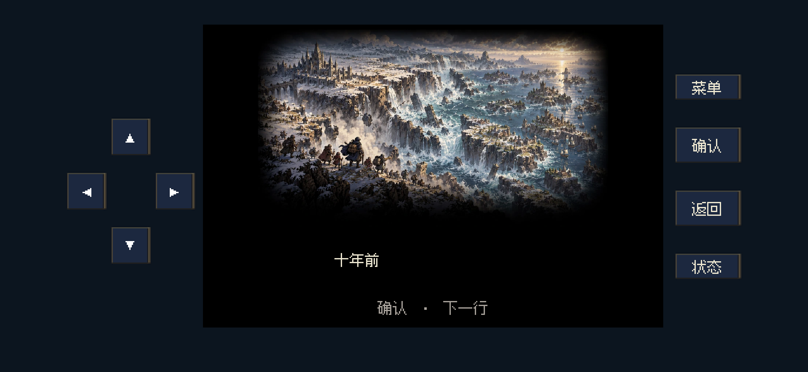
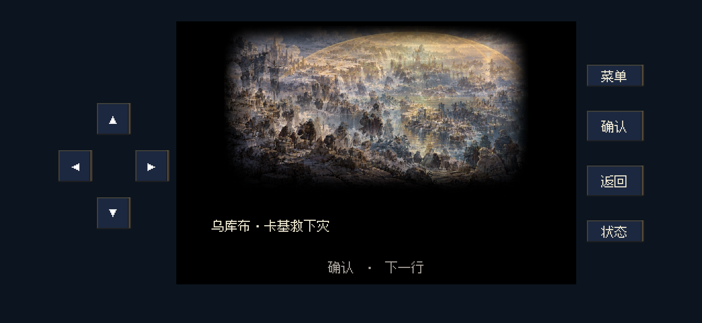
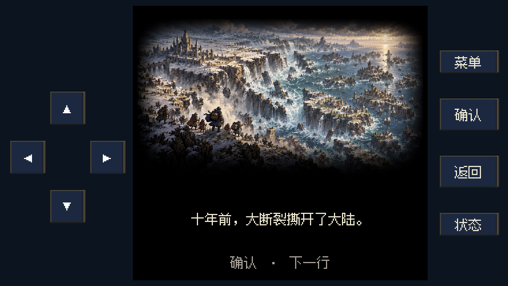
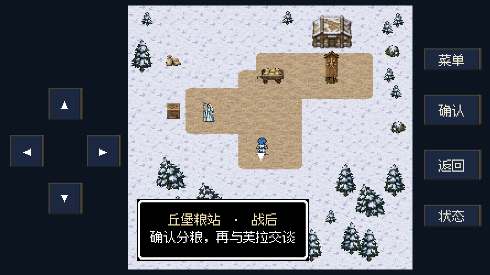
本地制作的短打字机音效（40 毫秒、单声道、24kHz；峰值约 −11.4dBFS）。已检查电平、格式与运行调用；没有将无声截图验证描述为人耳试听。
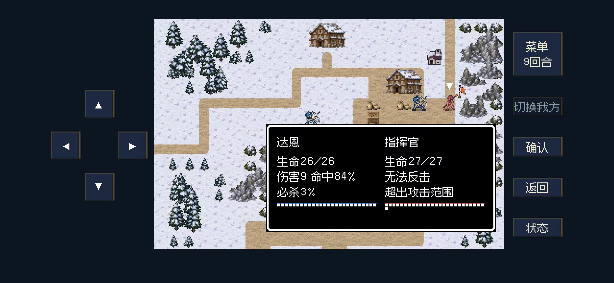
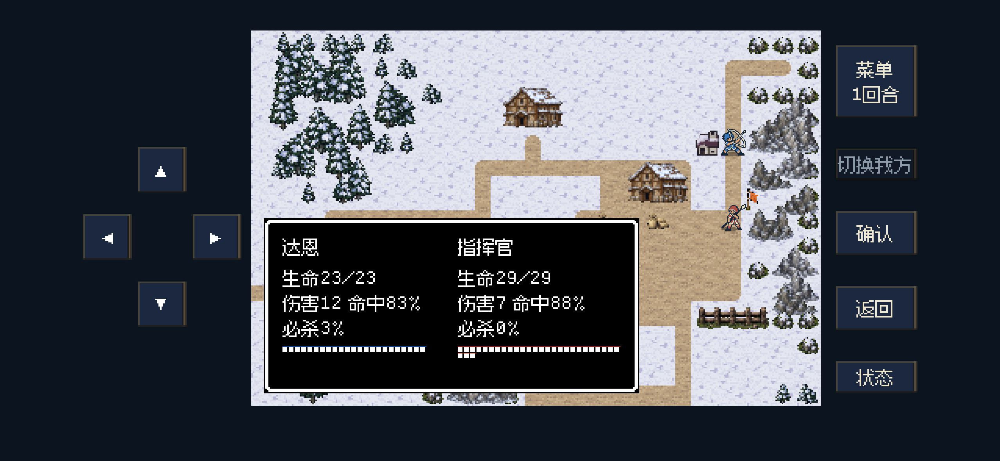
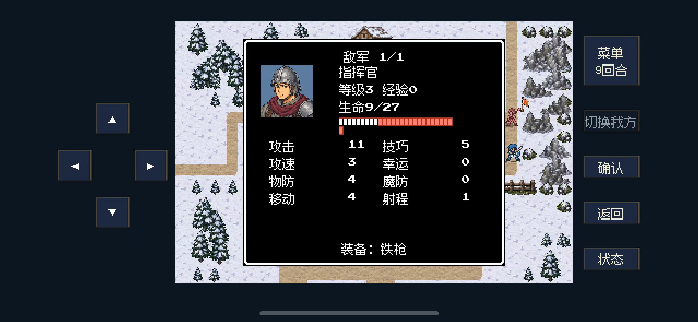
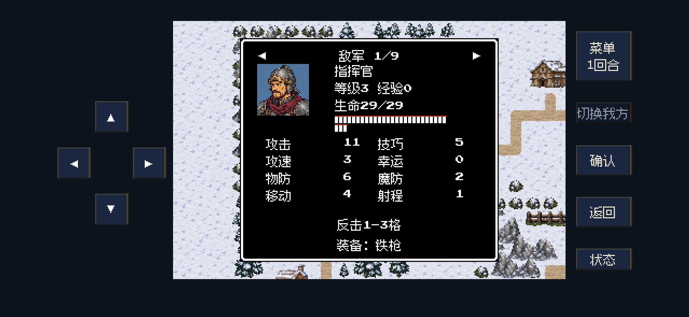
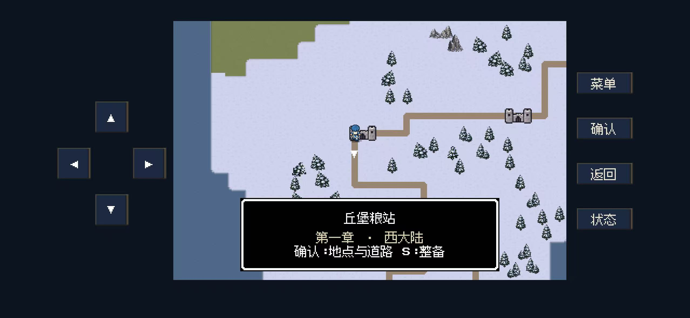
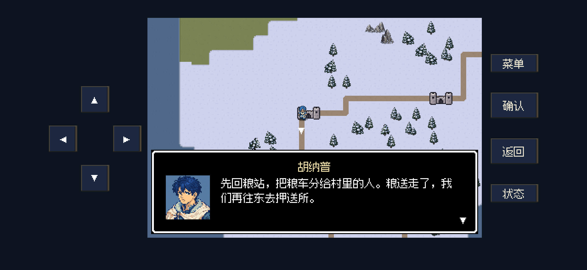
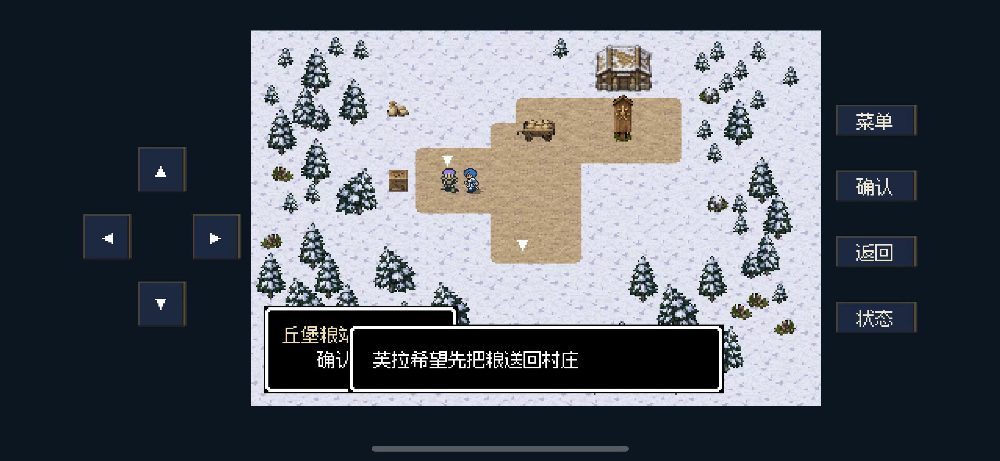
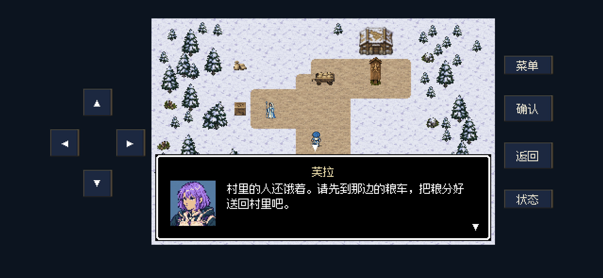
验证包括新建旅程、介绍中途保存与继续、逐字音效请求、所有开场原文字序、场景淡入中间帧、守卫反击边界与攻击触发、双防迁移、分粮前后道路和邀请、完整对白字形安全区，以及 2556×1179／1334×750 的后台布局。未进行五章完整重玩或 iPhone 真机触摸试玩。
四幅插画均由内置 imagegen 制作。原始 PNG 保存在工程外层 source 目录，运行使用独立 WebP 副本；素材按专用开场横图使用，不作为九宫格通用背景。运行配图均小于 200,000 字节。
| 场景 | 像素尺寸 | 实际体积 |
|---|---|---|
| fracture | 959x540 | 196,374 B |
| sanctuary | 959x540 | 189,066 B |
| requisition | 959x540 | 189,096 B |
| dayreturn | 959x540 | 191,632 B |
完整提示词、原图与运行路径 · 逐图尺寸、字节与压缩理由 · 运行旁白数据
完整运行截图保留原始像素。大图截图另提供无损 WebP，超过参考体积时保留清晰度，未缩小、裁切或破坏文字。点击图片可查看原尺寸。